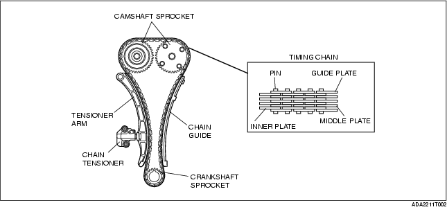

TIMING CHAIN, CHAIN TENSIONER CONSTRUCTION [ZY]
id0110001012c0
• A silent chain has been adopted for the timing chain to reduce noise caused when the timing chain is engaged with sprockets.
• Engine oil inside the engine front cover lubricates the timing chain and each sprocket. The pin part of the timing chain has special surface processing to improve wear resistance.

• A chain tensioner employing a ratchet in conjunction with hydraulic pressure has been adopted for the timing chain tensioner.
• The tension of the timing chain is constantly maintained using oil pressure and spring force in the chain tensioner.
• The chain tensioner is composed of a ratchet which controls the plunger movement when the engine is started, a plunger which presses the tensioner arm, a plunger spring, and a check ball which maintains hydraulic pressure.